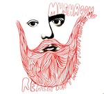

Home Artist links Label link

Mushroom - Really Don't Mind If You Sit This One Out
| Artist: | Mushroom |
| Title: | Really Don't Mind If You Sit This One Out |
| Label: | 4zero FZ001 |
| Length(s): | 77 minutes |
| Year(s) of release: | 2006 |
| Month of review: | [07/2008] |
Line up
Pat Thomas - drums
Erik Pearson - flute, sax
Michael Holt - piano
Marc Capelle - trumpet
Kurt Statham - bass
Dan Olmsted - guitar
Dave Mihaly - percussion
Alec Palao - bass
Graham Connah - piano, organ
Nord Lead - synth
Alex Candelaria - guitar
Monica Pasqual - electric grand piano
Tracks
| 1) | Klonopin | 17.57
|
| 2) | Kyle Lover A Funny Bunny | 10.48
|
| 3) | The Reeperbahn | 18.12
|
| 4) | My Brain Hurt Like A Warehouse It Had No Room To Spare | 8.29
|
| 5) | Phillip Seymour Hoffman 6.31 |
|
| 6) | Why Do Most German Booking Agents Have Brain Damage? | 14.55
|
Summary
The music
As the band name, the songtitles and the artwork would have it, Mushroom are psychedelic jammers. The first track, however, makes clear that things aren't as simple as that. Even though this is very much jammy, it's more so in a somewhat modern jazzy direction, than it is in psychedelic atmospheres. I guess you could say that puts them in the same ballpark as a Sun Ra. The recordings are live, which is pretty audible, both in the freedom of play and in the sound quality.
Even though both jazz and psychedelic are sensitive to endless jamming without much direction, especially in live situations, the combination of those does not spin out of control. This in itself is remarkable. That does not mean, though, that there's no spinning done here. The Reeperbahn, for instance, does lose it halfway through. The psychedelics get the upperhand here. Still, the band work very well into making these tracks sound like good compositions, without losing themselves in endless soloing, or other types of -err- introspective musicianship.
Conclusion
Even though I'm not the biggest fan of instrumental stuff in this musical vein and Mushroom put up quite an endurance test with this 77 minute disc, I came through pretty well. So, I guess the folks put together a pretty solid disc of improvisational music. I still don't expect this to become a regular spin, but, hey, what does? Good solid music that combines the freedom of live play with musical quality in a satisfying manner.
© Roberto Lambooy